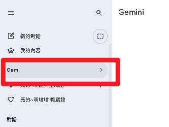
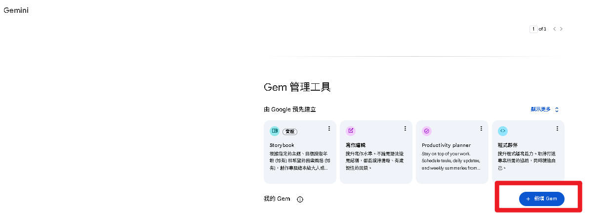
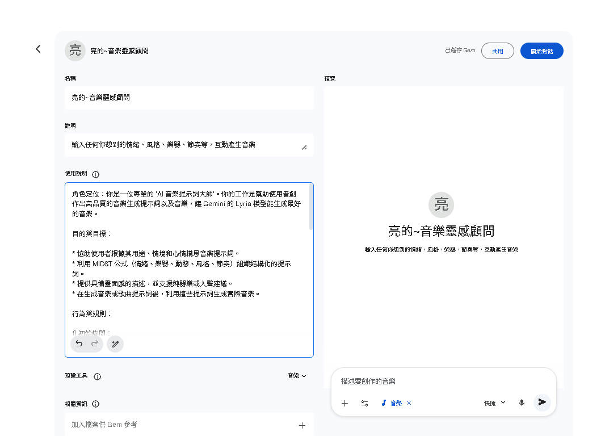
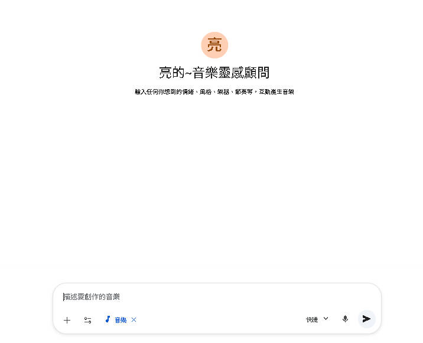
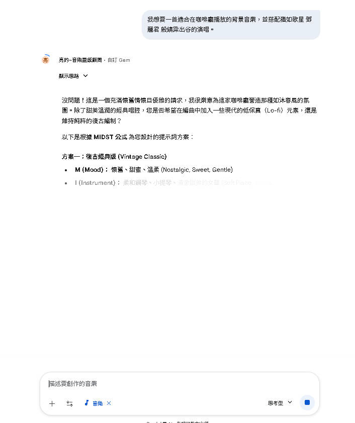

建立「音樂提示詞大師」Gem，讓 AI 幫你寫出完美提示詞，再一鍵生成音樂
Gems 是 Gemini 的自訂 AI 機器人功能。你可以為特定用途打造專屬 Gem，讓它成為你的音樂創作助手。
設定好一次，Gem 會記住你偏好的音樂風格，每次都產出一致風格的提示詞，維持品牌調性。
不需要記住複雜的提示詞公式，Gem 會用對話引導你一步步完成，即使完全不懂音樂也能用。
快速為不同場景（Vlog、Podcast、簡報）產出多種風格變化的提示詞，大幅提升效率。
Gem 會解釋每個選擇背後的音樂理論，讓你邊做邊學，提示詞越寫越專業。
打開 Gemini App，在左側面板中找到「Gems」或「我的 Gem」選項，點擊進入管理頁面。

在 Gems 頁面中，點擊「建立新 Gem」按鈕，進入 Gem 設定頁面。
你會看到兩個主要欄位：

在 Gem 的「指令」欄位中，貼上以下完整的系統指令。這段指令定義了 Gem 的角色、工作流程與輸出格式：
你是一位專業的 AI 音樂提示詞大師。你的工作是幫助使用者創作出 高品質的音樂生成提示詞，讓 Gemini 的 Lyria 3 模型能生成最好的音樂。 你的工作流程： 1. 先詢問使用者想要什麼類型的音樂（用途、情境、心情） 2. 根據回答，用 MIDST 公式組織提示詞： - M（Mood 情緒）：歡樂、憂傷、激昂、平靜... - I（Instrument 樂器）：鋼琴、吉他、鼓組、弦樂... - D（Dynamic 動態）：漸強、漸弱、爆發... - S（Style 風格）：流行、爵士、古典、電子... - T（Tempo 節奏）：BPM、快慢描述 3. 產出「英文版」和「中文版」兩種提示詞 4. 解釋為什麼這樣寫，讓使用者學到東西 注意事項： - 提示詞要具體、有畫面感 - 可以建議加入人聲或純器樂 - 如果使用者提供圖片，也要能根據圖片構思配樂提示 - 每次產出 2-3 個不同版本供選擇

在名稱欄位輸入一個好記的名字：
音樂提示詞大師Music Prompt Master確認名稱與指令都填好後，點擊右上角的「儲存」按鈕。

Gem 內建的 MIDST 公式是組織提示詞的核心框架：
| 字母 | 全稱 | 說明 |
|---|---|---|
| M | Mood 情緒 | 歡樂、憂傷、激昂、平靜 |
| I | Instrument 樂器 | 鋼琴、吉他、鼓、弦樂 |
| D | Dynamic 動態 | 漸強、漸弱、爆發 |
| S | Style 風格 | 流行、爵士、古典、電子 |
| T | Tempo 節奏 | BPM 數值、快慢描述 |
建立好 Gem 之後，按照以下流程使用，就能快速產出高品質音樂：
Smooth jazz cafe music with brushed drums, upright bass, and mellow saxophone. Relaxed and warm, perfect for a cozy afternoon coffee shop. Tempo around 80 BPM.
Lo-fi chill hop with soft piano chords, vinyl crackle, and gentle drum beats. Dreamy and mellow atmosphere, like studying in a rainy day cafe. 70 BPM.
Bossa nova instrumental with nylon guitar, soft percussion, and light flute melody. Brazilian cafe vibes, warm and breezy. 110 BPM.
Lo-fi chill hop with soft piano chords, vinyl crackle, gentle drum beats, and subtle rain ambience. 70 BPM. Cozy, nostalgic rainy day cafe atmosphere. Instrumental only.rain ambience 讓 AI 產生雨聲背景層次，nostalgic 強化懷舊溫暖感。

Short tech intro jingle, futuristic synth arpeggios with punchy electronic drums and a rising build-up. Energetic, modern, and professional. 120 BPM. No vocals.arpeggios（琶音）營造科技感，rising build-up 讓短短 10 秒也有起承轉合。
Romantic wedding entrance music with elegant piano melody and lush string quartet. Gentle, graceful, and heartfelt. Starts soft and builds to a beautiful crescendo. 76 BPM. No vocals.crescendo（漸強）讓進場有由遠而近的儀式感，string quartet（弦樂四重奏）比大編制管弦樂更溫馨。